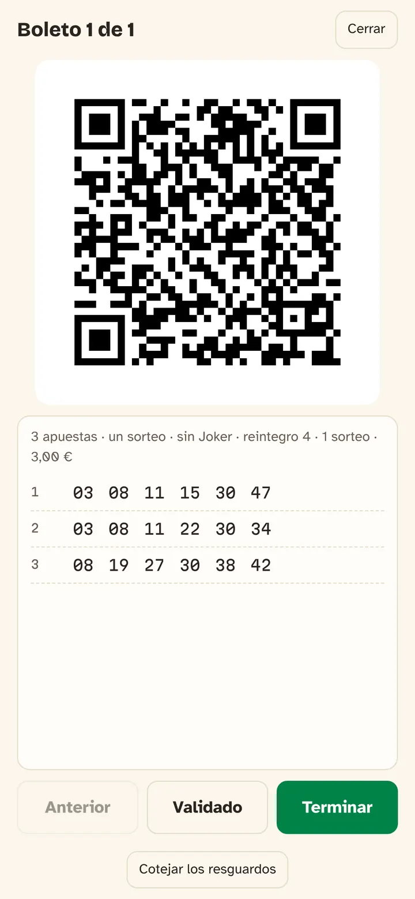
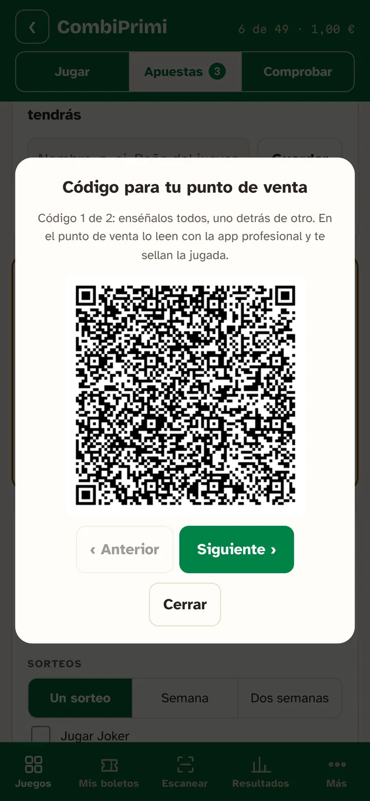

Llevar tu jugada al punto de venta
App independiente. Combinario no es oficial ni tiene relación con Loterías y Apuestas del Estado (SELAE). No vende apuestas: solo te ayuda a prepararlas, y se validan y se pagan en un punto de venta. Solo para mayores de 18 años.
La app no valida apuestas ni cobra. La jugada la sella tu punto de venta en el terminal de Loterías, y allí pagas.
Códigos QR para el terminal (beta)
En la pestaña Apuestas de cada juego, «Códigos QR» lleva la marca «En pruebas». Pulsa «Ver QR»: sale un QR por boleto que el punto de venta lee con la pistola del terminal. «Anterior» y «Siguiente» pasan de un QR a otro; «Validado» marca el que ya han pasado.
- Solo en la versión beta, hasta el 31/12/2026, y solo en la pantalla del móvil.
- Con una jugada grande, pide que pasen primero un boleto y comprobad que está bien antes de validar el resto.
- «Cotejar los resguardos» abre la cámara: escanea cada resguardo que te den y la app lo compara con tu jugada y te avisa si algo no coincide o falta alguno.


Código para el punto de venta
«Código para el punto de venta» enseña un código que solo lee tu punto de venta con su app profesional. Enséñalo en la pantalla (si son varios, uno detrás de otro) o mándalo por WhatsApp.
Enviar por WhatsApp a tu punto de venta
Si tu punto de venta tiene cartel de Combinario, escanéalo una vez con Escanear y pon tu nombre en Más › «Tu punto de venta». Desde entonces, en «Código para el punto de venta» sale «Enviar por WhatsApp» y la jugada le llega con tu nombre.
PDF, TXT o CSV
La lista de apuestas, para imprimirla o enviarla. La hoja en PDF lleva una casilla para tachar cada apuesta al validarla.
Después
En el punto de venta pasan la jugada al terminal y te dan el resguardo oficial. Guárdalo: es lo único que vale para cobrar.